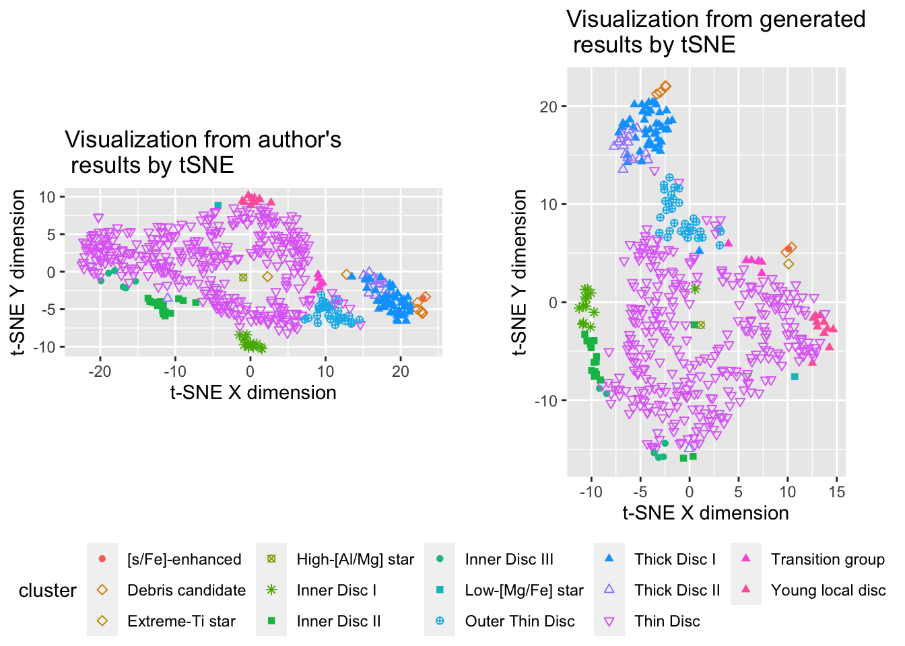

Do the tSNE results can reproducible?
If you are an R user who is struggling to access HARPS GTO sample dataset and who have the question that Can’t we reproduce the t-distributed stochastic neighbor embedding (tSNE) results that already exist? in their mind, this blog is for you. Today, I will introduce my workflow of accessing processed data from original data, downloading the processed data, data processing to initialize cluster labels, and show my surprising findings on reproducing tSNE results.
This example is relevant to the paper, “Dissecting stellar chemical abundance space with t-SNE” (Anders et al. 2018, Astronomy & Astrophysics 619, A125).
For simplicity, I added all the codes separately and linked them through the process.
Please note that, you will need to \(\color{green}{\text{install python library}}\) called open_data which you can find in open_data.py as the initial step.
Data processing steps already followed by open_data library
The original data can be find in the GitHUb repository of the authors as DelgadoMena2017.fits which includes some existing cluster labels and abundance determination for \(\color{blue}{\text{Mg, Al, Si, Ca, TiI, Fe, Cu, Zn, Sr, Y, ZrII, Ce, and Ba}}\). This file contains details regrading \(\color{red}{\text{1059}}\) stars.
Then, how we get only \(\color{red}{\text{530}}\) stars? 🤔
Let’s investigate…
According to the authors, the sample needed to be analyzed in a more restricted temperature range to obtain reliable tSNE abundance maps. The reason is that specific abundance trends seem to dominate underlying temperature trends. Therefore,
- choose an effective temperature range of \(\color{brown}{5300 \text{ K} < T_{eff} < 6000 \text{ K}}\).
In this step, only \(\color{green}{539}\) stars were satisfied. Next,
- exclude stars with \(\color{brown}{\text{log } g_{HIP}} < 3\) which remove \(\color{green}{\text{one}}\) star.
Then,
- select successful abundance determination for \(\color{brown}{\text{Mg, Al, Si, Ca, TiI, Fe, Cu, Zn, Sr, Y, ZrII, Ce, and Ba}}\) which use as input for tSNE.
Only \(\color{green}{533}\) stars are remained because others contain missing values. Furthermore,
to compensate the fact that tSNE does not take into account individual (heteroscedastic) uncertainties in the data, the authors followed the approach of Hogg et al. (2016) and rescaled each abundance by the median uncertainty in that element, assuming an abundance uncertainty floor of 0.03 dex. Additionally,
remove stars which did not coverge by using the age determination code,
StarHose code.
The \(\color{green}{3}\) stars are discarded.
In our final sample, there is only \(\color{green}{530}\) stars. 👏
Note: Do not need to consider the above steps because open_data package already done it for us.
Our workflow
Let’s begin… 🤓
To download the processed data as a csv file and save locally, you need to run download_original.py,
Run this code to further process data as indicated in original paper to compute missing variables, new variables, cluster labels and produce plots of authors t-SNE results,
Run this code to conduct our own t-SNE results.
In here, I used the $ authors already mentioned that in the paper.
Here is the output..🤗

Acknowledge
I am grateful for Dianne Cook who suggested me as an exercise for me.